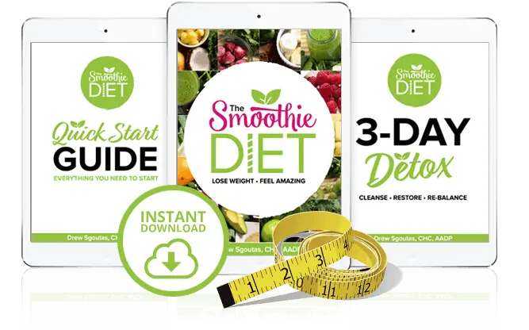

The Smoothie Diet™ | Official Website
The Smoothie Diet is a 21-day weight loss program created for those looking to shed pounds quickly. By replacing some solid meals with nutrient-packed smoothies, you can achieve fast and effective weight loss while still enjoying delicious and satisfying options.
The program includes a “healthy” eating day each week, allowing you to eat regular meals, along with a meal plan to help guide you through that day.
Join over 20,000 people worldwide who have successfully lost weight and transformed their lives with the 21-Day Smoothie Diet Challenge!
Regular Price: $47
Only for: $27
HURRY UP!